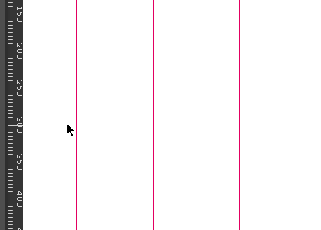

Guides
Guides, also known as guidelines, are design aids that allow you to snap or align objects and anchor points to a horizontal or vertical line manually placed on the canvas.
To place a guideline on canvas:
- Ensure the rulers are visible: click or press ++R to toggle ruler visibility
- Then, toggle the guides visibility: click or press +.
- Drag from the ruler onto the canvas, and release your mouse button to place the guide.
The guide coordinates are shown while dragging to allow for precise placement.
To move the guides:
- Hover over the guideline in the viewport.
- When the cursor changes to a two-headed arrow, click and drag to a new location.
To remove a guideline:
- Click and drag the guideline to the ruler.
- Release your mouse button.

You can double-click a ruler to add a guideline at the 0 coordinate.
Manage guides
To see and edit every guideline of the page in one place, double-click a guideline with the Select tool. The Manage Guides dialog opens with two lists: Horizontal Guides and Vertical Guides.
- Each row is one guideline. Type a new position in its field, or click the remove button at the end of the row to delete the guideline.
- Click + Add under a list to add a guideline on that axis.
- The fields accept simple calculations, such as 87+95. The result is used when you leave the field or press Enter.
- The row of the guideline you double-clicked is outlined and ready to type in.
- Press Enter to confirm a field, and press Enter again to save. Click Save to keep your changes or Cancel to discard them.
Positions are measured from the ruler origin (see Rulers). All changes made in the dialog are saved as one undo step named Change guides.
Lock guides
Click Lock Guides in the toolbar to keep the guidelines where they are. While guides are locked:
- guidelines cannot be selected, moved or dragged back to the ruler to delete them,
- double-clicking a guideline does not open Manage Guides,
- objects and anchor points still snap to the guidelines when Snap to Guides is enabled.
Click the button again to unlock them. Locking is saved with the document and is one undo step named Toggle guide lock. A document that has never been locked is saved exactly as before.